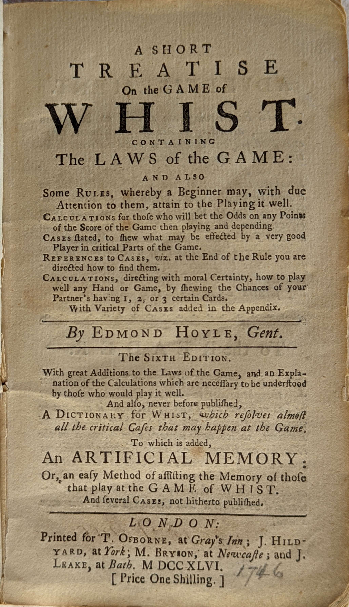

A Descriptive Bibliography of Edmond Hoyle
Copyright © 2014-26 by David Levy
(page updated 2026-01-30)User Guide
Whist.6
A Short Treatise on the Game of Whist, printed for T. Osborne et al, sixth London edition, 1746.
 |
Title: | A SHORT | TREATISE | On the GAME of | WHIST. | CONTAINING | The LAWS of the GAME: | AND ALSO | Some Rules, whereby a Beginner may, with due | Attention to them, attain to the Playing it well. | Calculations for thoſe who will Bet the Odds on any Points | of the Score of the Game then playing and depending. | Cases ſtated, to ſhew what may be effected by a very good | Player in Critical Parts of the Game. | References to Cases, viz. at the End of the Rule you are | directed how to find them. | Calculations, directing with moral Certainty, how to play | well any Hand or Game, by ſhewing the Chances of your | Partner’s having 1, 2, or 3 certain Cards. | With Variety of Cases added in the Appendix. | [rule] | By Edmond Hoyle, Gent. | [rule] | The Sixth Edition. | With great Additions to the Laws of the Game, and an Expla-|nation of the Calculations which are neceſſary to be underſtood | by thoſe who would play it well. | And alſo, never before publiſhed, | A Dictionary for Whist, which reſolves almoſt | all the critical Caſes that may happen at the Game | To which is added, | An ARTIFICIAL MEMORY: | Or, an eaſy Method of aſſiſting the Memory of thoſe | that play at the GAME of WHIST. | And ſeveral Cases, not hitherto publiſhed. | [rule] | LONDON: | Printed for T. Osborne, at Gray's Inn; J. Hild-|yard, at York; M. Bryson, at Newcaſte; and J. | Leake, at Bath, M DCC XLVI. | {Price One Shilling.} |
| Collation: | 12o: π1 [A]2 B–G6 H4 [$½ (+C4,E4,H3) signed; signing F2 as F3]; 43 leaves, pp. [6 ] [1] 2–80 |
| Contents: | Signature (Page) Reference | Contents | Signature (Page) Reference | Running Titles |
| π1r | title | |||
| π1v | ‘ADVERTISEMENT. | [...] | To the READER. | [...] | [autograph of Edmond Hoyle]’ | |||
| A1r–A2v | ‘[headpiece Spedding H07] | THE | CONTENTS. | [...]’ | A1v–A2v | ‘The CONTENTS.’ | |
| B1r–G5v (1–70) | ‘[headpiece Spedding H09] | A SHORT | TREATISE | On the GAME of | WHIST. | [...]’ | B1v–H4v (2–80) | ‘A ſhort Treatise on | the Game of Whist.’ | |
| on B2r (3) | ‘the Game at Whist.’ | |||
| G6r–H4v (71–80) | ‘[headpiece Spedding H09] | An | Artificial Memory. | OR | An Eaſy Method of Aſſiſting the Me-|mory of thoſe that play at the Game | of Whist. | To which are added, | Several Cases not hitherto Publiſh'd. | [...]’ |
| Catchwords: | A2v An [A]; D5r(33) Par- [CHAP.]; E6v(48) CHAP. [CAAP.]; G2r(63) [none] [14.] |
| Publisher: | Thomas Osborne |
| Printer: | Thomas Gardner (ornaments) |
| Notices: | 1745-10-26 London Evening Post: “On the 9th of November will be publiſh'd” 1747-12-11 Pennsylvania Gazette: “Also lately imported, and to be sold by B. Franklin, the following books, viz...Hoyle on Whist.” |
| Price: | 1s. (title, advertisement) |
| References: | ESTC T87541, Horr 647, Jessel 798, Marshall s7 no.8 p262 (1889-10-05), Rather 28 |
| Copies Seen: | L [7915.a.46] (ECCO); O [G.Pamph.1311(11)]; O [Jessel f.547]; O [Johnson f.1212]; Levy [1014]; Levy [1761]; Levy [2228] |
| Copies Seen in Collections: | O [Jessel f.544(1)] (see Osborne.A); O [Jessel f.545(1)] (see Osborne.C); O [Jessel f.546(1)] (see Osborne.B); Copisarow (see Osborne.B); CLU-C [*GV1277.H86 1746] (see Osborne.C); CSFU [GV1277.H89 1746] (see Osborne.B); DLC [GV1277.H89 1746] (see Osborne.B); NvLN [GV1241.H69 1746] (see Osborne.B); OCl [789.87H F46L] (see Osborne.B); PPL [Iu Hoyl Allen 333 no.1] (see Osborne.A); TNJ [GV1241.H6 1746] (see Osborne.C); TNJ [GV1241.H8 A6] (see Osborne.C); TxU [GV1277.H89 1746] (see Osborne.C); Levy [1617] (see Osborne.B); Levy [1685] (see Osborne.C); Levy [1764] (see Osborne.C); Levy [2097] (see Osborne.A) |
| Other Copies: | PP [A795 H851] |
| Other Copies in Collections: | Sings (see Osborne.B); HAG [KW 973 L 6 [1]] (see Osborne.C); Beauchene (see Osborne.B); CtY-BR [NLp80 742he] (see Osborne.C); AuNU [RB 4646.43] (see Osborne.C); AuVSL [793 H85 (1746)] (see Osborne.B) |